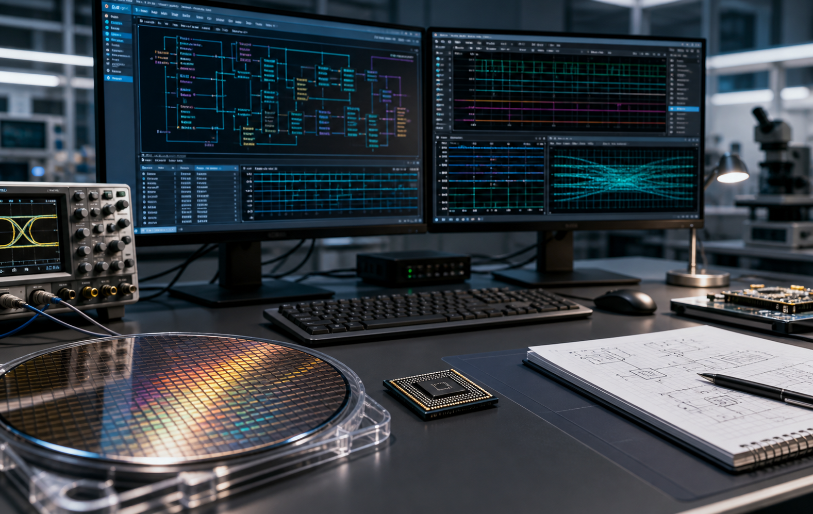
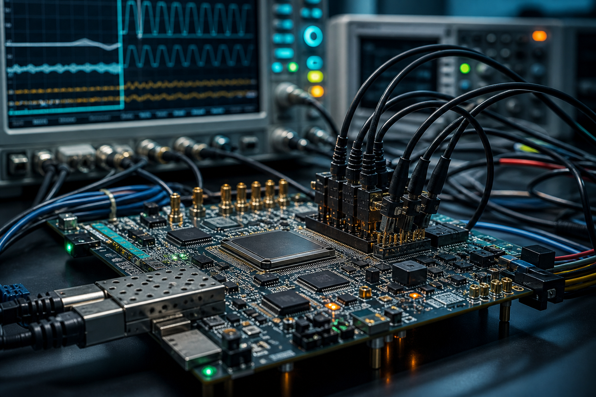

ASIC Design
RTL design, IP integration, microarchitecture refinement, clock-domain crossing review and implementation support.
- SystemVerilog RTL
- SoC and IP integration
- Low-power and timing-aware design
ASIC, FPGA and verification consultancy
Chip Synergy helps semiconductor and systems teams deliver complex digital designs with experienced support across ASIC, FPGA, verification, DFT, embedded software and implementation flows.
What we do
We partner with semiconductor, systems and product teams that need experienced hands on hard schedules: defining microarchitecture, building reusable verification environments, closing implementation issues, and strengthening delivery quality without adding process drag.
The result is a leaner engagement model: senior engineering capability, direct communication, and a delivery rhythm shaped around your existing tools, milestones and technical risks.
Services
Engage Chip Synergy for a defined work package, urgent schedule recovery, or longer-term team extension.

RTL design, IP integration, microarchitecture refinement, clock-domain crossing review and implementation support.
UVM testbenches, constrained-random stimulus, coverage strategy, assertions, regressions and debug acceleration.
FPGA prototyping, bring-up, timing closure, board-level integration and high-confidence validation flows.
Scan readiness, test planning, lint, CDC, reset-domain checks and practical support through design closure.
Low-level firmware, driver development, hardware-software integration and lab-focused diagnostic tooling.
Flexible engineering engagement models for teams that need senior support without long ramp-up cycles.
Markets
Data movement, accelerator control, verification and FPGA prototyping for compute-intensive designs.
Digital datapaths, high-throughput validation, protocol-oriented verification and integration support.
Reliable control logic, connected devices, diagnostics and hardware-software integration.
Verification discipline, deterministic behaviour and robust engineering practices for long-life products.
Delivery
We work inside your existing flow, align quickly on project risks, and keep engineering communication concrete so decisions do not get lost between teams.

Engineering standards
Design and verification work is tied to clear review data: passing regressions, coverage targets, checklists and closure reports.
We adapt to your EDA environment, coding standards, repositories and issue tracking rather than forcing a separate process.
Concise status, risk calls and technical notes keep stakeholders aligned without burying engineers in ceremony.
Use Chip Synergy for targeted consulting, defined deliverables, or additional engineering capacity when schedules tighten.
Careers
Chip Synergy is interested in engineers with strong fundamentals in RTL, verification, FPGA, DFT, embedded software and semiconductor delivery. If that sounds like your kind of work, send a CV and a short note about the projects you have shipped.
Contact careersContact
Share the project stage, technical challenge, required skills and timeline. We will come back with the right next step for a focused technical conversation.
Include the design stage, target technology or FPGA family, verification status and where support is needed.
info@chipsynergy.com LinkedIn: Chip SynergyUseful details: project stage, timeline, required skills, current risks and preferred next step.